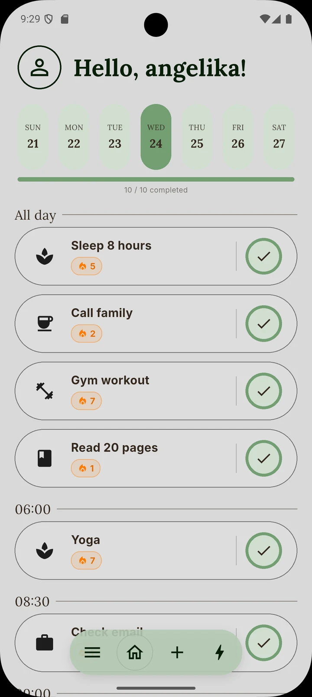
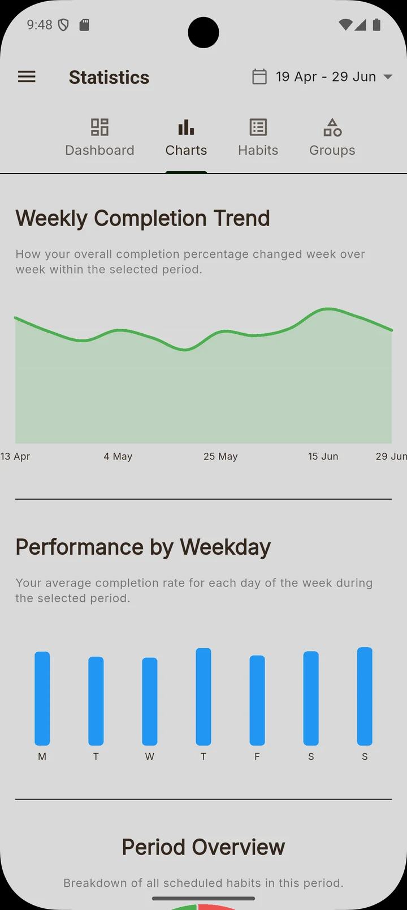
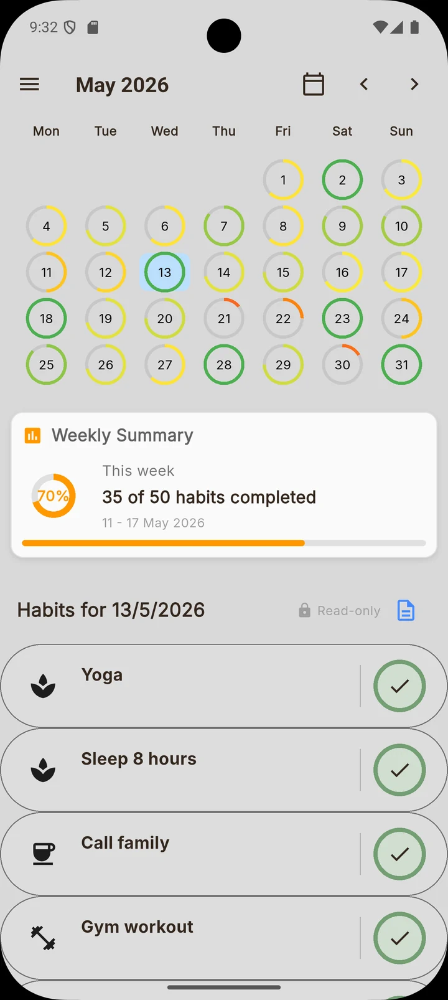

project 02 / 03
Motu
A habit tracker that turns small daily wins into streaks, charts and badges. My bachelor's thesis project, built in Flutter with Firebase.
- Flutter
- Dart
- Firebase
- Cloud Firestore
- fl_chart



The idea
Most habit apps stop at a checkbox. With Motu I wanted to show the bigger picture: which habits are going well, which ones need attention, and how they change over weeks and months.
I designed the screens in Figma first and then built the app screen by screen to match.
What it does
- Accounts with sign-up, email verification and password reset, with data synced to the cloud.
- Habits with their own icon, colour and group, each with its current streak. A habit can have a set time or stay "all day", and the home screen shows how many of today's habits are done. Swipe a habit to mark a break day, edit it or delete it.
- A calendar with daily, weekly and monthly views, plus a short note for each day. Past days are read-only, so you can look back but not rewrite history.
- Statistics split into four tabs, filtered by week, month, 3 months, year or your own date range.
- The longest current streaks and the habits needing attention, so you know where to focus.
- Badges for milestones and the full app in Polish and English.
Under the hood
Firebase Auth handles accounts and Cloud Firestore stores habits, groups and daily notes. The logic lives in separate services, so the screens only display data and never calculate it.
Charts are built with fl_chart, and unit tests cover the statistics, streak and badge logic, with a fake data source in place of Firebase, so they run without a real database.
What's next
- Longer pauses for a trip, an illness or an exam period, with a reminder when it's time to come back.
- Daily micro challenges, like 15 minutes of reading, that count towards their own badges.
- Reminders with a chosen time and sound.
- Ad hoc habits: quickly add a one-off habit for the day, without setting up a full recurring one.